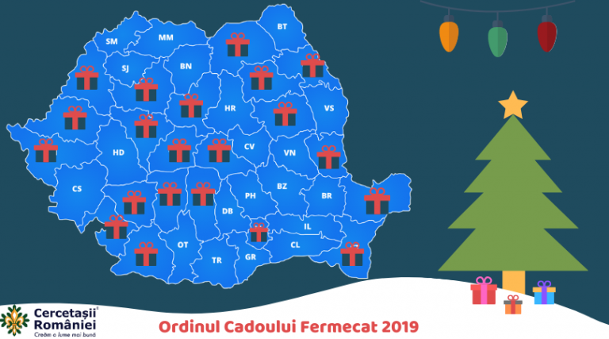

Ordinul Cadoului Fermecat
De ce?
Acest proiect s-a născut din nevoia cercetașilor de a se implica în viața comunității locale și de a contribui la bucuria celor care se pregătesc de sărbătorile de iarnă. An de an, grupurile locale de cercetași din diverse regiuni ale țării organizează în orașele lor cea mai mare campanie de strângere de fonduri, cu scopul de a folosi donațiile pentru a-și susține activitățile sau pentru a sări în ajutorul celor mai puțin norocoși. Înarmați cu hârtie de împachetat, panglici colorate și multă voie bună, tinerii cercetași dau o mână de ajutor la împachetarea originală a cadourilor de Crăciun, căci „Cercetaşul este util şi îşi ajută semenii în orice situaţie, este un prieten pentru toţi şi frate cu toţi cercetaşii”.
Pe lângă ajutorul și susținerea financiară a mișcării cercetășești, „Ordinului Cadoului Fermecat” are o puternică latură educațională, deoarece tinerilor le sunt antrenate abilitățile de comunicare, de lucru în echipă, organizatorice și creativitatea.
Unde?
În urmă cu doi ani , cercetașii din Centrul Local ” Ecaterina Teodoroiu” au adus pentru prima data la ei in oraș acest proiect. În fiecare an, ne puteți găsi in Shopping City Targu Jiu.
Cand ?
Ne gasiti in perioada :
- 4 decembrie- 6 decembrie
- 19 decembrie-24 decembrie
Inceputul paginii